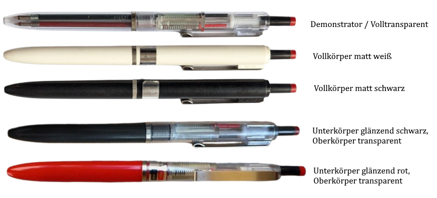
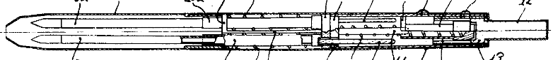
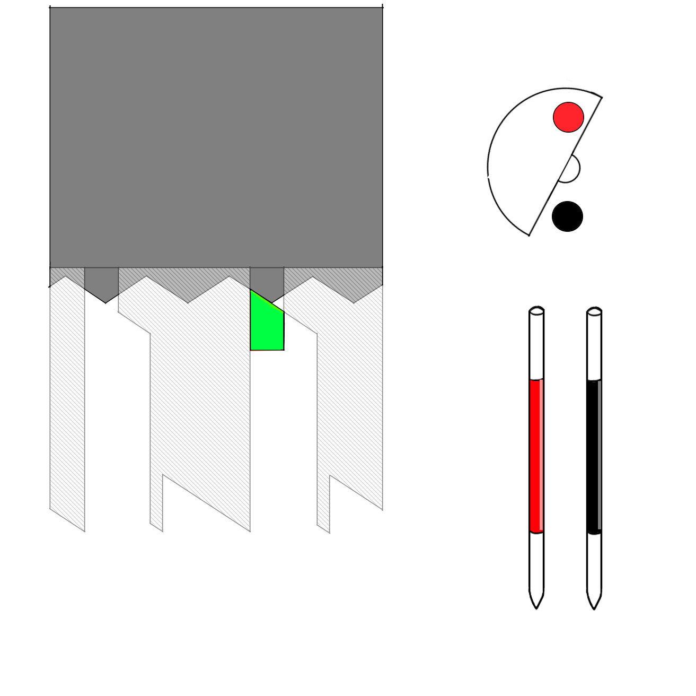
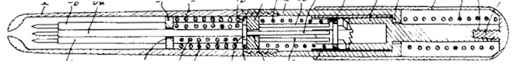
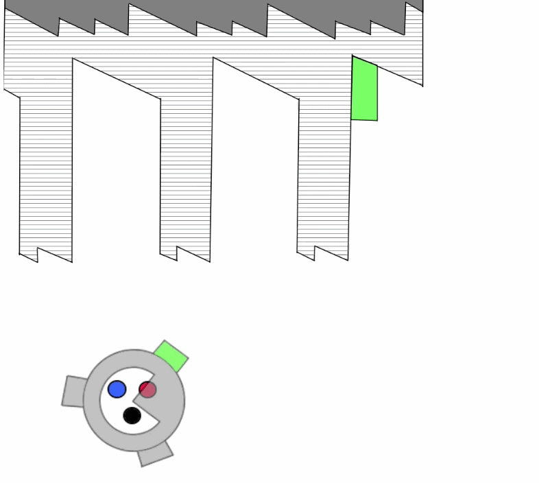

Mitsubishi Uni Sc200
Zweifarbkugelschreiber
Stand: 11.05.2026
Der Zweifarbenkugelschreiber Uni Sc200 wurde 1974 von ANCOS (アンコス) zum Patent angemeldet, 1976 patentiert (特開昭51-28027) und von der Mitsubishi Pencil Company Limited (三菱鉛筆株式会社) verkauft.
Das Besondere bei diesem Stift ist, dass mit jedem Drücken die Farbe wechselt. Es erscheinen abwechselnd eine rote oder schwarze Mine in Schreibstellung.

Ungewöhnlicher Mechanismus
Ein Mehrfarbstift, der mit jedem Drücken die Farbe ändert, ist keine neue Idee gewesen:Beispielsweise kam 1951 dem Deutschen Helmut Bross dieselbe Idee, und 1964 entwarf die japanische Firma CROWN Fancy Goods Co. Ltd einen solch ähnlichen Stift zum Unisc200, dass dieser eine Inspiration für Mitsubishi Pencil gewesen sein könnte.
Ob diese und andere Stifte jemals hergestellt wurden, ist noch unbelegt. Wie der UniSc200 mögen sie aber wohl keine großen Erfolge gewesen sein, da ein solcher Mechanismus unpraktisch ist.
Funktionsweise

Ein gewöhnlicher moderner Zahnkulissenmechanismus wird durch einen Druckknopf betätigt.
Der untere Teil des Druckmechanismus verbreitert sich in eine halbkreisförmige Scheibe.
Bei der Drehung des Elements durch die Zahnkulisse ist die Scheibe immer so rotiert, dass immer die nächste Kugelschreibermine über einen an ihr rückseitig verbundenen Stab hervorgeschoben wird.
Das von mir erstellte GIF zeigt es anschaulich:

- Links die Zahnkulisse. Dunkelgrau ist der Drücker, das Transparente ist Teil der Stiftmantelhülse und das Grüne ist Teil des Elements, das die Halbscheibe besitzt und direkt auf die Vorschubstäbe der Minen wirkt.
- Rechts oben die Vorschubstäbe in rot/schwarz und die Halbscheibe in weiß.
- Rechts unten die Stellungen der Minen.
Dreifarb-UniSc200

Im Patent finden wir eine weitere Version des UniSc200 mit drei Kugelschreiberminen, die nie hergestellt wurde.
Die Unterschiede waren:
- Statt des Druckknopfs wurde eine Kappe genutzt (Kappendrücker)
- Unter der Kappe wurde eine zusätzliche Feder verbaut, die die Kappe immer wieder hochdrückt (Siehe in den GIFs das Verhalten des grauen Teils). Beim 2-farb Sc200 lag der Druckknopf nach dem Drücken (Miene ausfahren) lose in der Hülse und konnte vor und zurück klappern
- Die Zahnkulisse ist um eine Wiederholung länger
- Die halbkreisförmige Scheibe wurde zu einem kürzeren Kreissegment und ist nicht mehr mittig aufgehängt, sondern Teil einer Hülse

Bei japanischen Schreibwarensammlern ist der Mitsubishi Uni Sc200 aufgrund seines seltenen Mechanismus hochbeliebt.